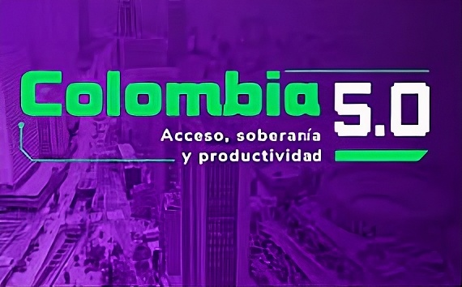

Colombia 5.0 Bogotá 2026 es un evento tecnológico que busca impulsar la transformación digital del país mediante la innovación, el desarrollo tecnológico y la formación en habilidades digitales. Esta iniciativa reúne a estudiantes, empresas, emprendedores y expertos en tecnología con el fin de promover el uso de herramientas digitales que ayuden al crecimiento económico y social de Colombia.
El objetivo de Colombia 5.0 Bogotá 2026 fue impulsar la transformación digital del país utilizando la tecnología como herramienta para mejorar la calidad de vida, la productividad y la innovación en Colombia. El evento fue organizado por el Ministerio TIC y se realizó en Corferias, Bogotá.